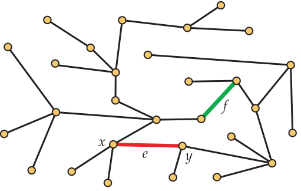
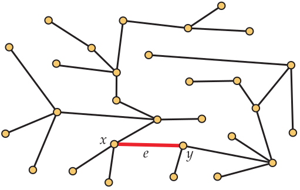

Section3.1Minimum Weight Spanning Trees
¶In this section, we consider pairs \((\bfG,w)\) where \(\GVE\) is a connected graph and \(w\colon E\rightarrow\nonnegints\text{.}\) For each edge \(e\in E\text{,}\) the quantity \(w(e)\) is called the weight of \(e\text{.}\) Given a set \(S\) of edges, we define the weight of \(S\text{,}\) denoted \(w(S)\text{,}\) by setting \(w(S)=\sum_{e\in S} w(e)\text{.}\) In particular, the weight of a spanning tree \(T\) is just the sum of the weights of the edges in \(T\text{.}\)
Weighted graphs arise in many contexts. One of the most natural is when the weights on the edges are distances or costs. For example, consider the weighted graph in Figure 3.1.1. Suppose the vertices represent nodes of a network and the edges represent the ability to establish direct physical connections between those nodes. The weights associated to the edges represent the cost (let's say in thousands of dollars) of building those connections. The company establishing the network among the nodes only cares that there is a way to get data between each pair of nodes. Any additional links would create redundancy in which they are not interested at this time. A spanning tree of the graph ensures that each node can communicate with each of the others and has no redundancy, since removing any edge disconnects it. Thus, to minimize the cost of building the network, we want to find a minimum weight (or cost) spanning tree.
To do this, this section considers the following problem:
Find a minimum weight spanning tree \(\bfT\) of \(\bfG\text{.}\)
To solve this problem, we will develop two efficient graph algorithms, each having certain computational advantages and disadvantages. Before developing the algorithms, we need to establish some preliminaries about spanning trees and forests.
Subsection3.1.1Preliminaries
The following proposition about the number of components in a spanning forest of a graph \(\bfG\) has an easy inductive proof. You are asked to provide it in the exercises.
Proposition3.1.3
Let \(\GVE\) be a graph on \(n\) vertices, and let \(\bfH=(V,S)\) be a spanning forest. Then \(0\le |S|\le n-1\text{.}\) Furthermore, if \(|S|= n-k\text{,}\) then \(\bfH\) has \(k\) components. In particular, \(\bfH\) is a spanning tree if and only if it contains \(n-1\) edges.
The following proposition establishes a way to take a spanning tree of a graph, remove an edge from it, and add an edge of the graph that is not in the spanning tree to create a new spanning tree. Effectively, the process exchanges two edges to form the new spanning tree, so we call this the exchange principle.
Proposition3.1.4Exchange Principle
Let \(\bfT=(V,S)\) be spanning tree in a graph \(\bfG\text{,}\) and let \(e=xy\) be an edge of \(\bfG\) which does not belong to \(\bfT\text{.}\) Then
There is a unique path \(P=(x_0,x_1,x_2,\dots,x_t)\) with (a) \(x=x_0\text{;}\) (b) \(y=x_t\text{;}\) and (c) \(x_ix_{i+1}\in S\) for each \(i=0,1,2,\dots,t-1\text{.}\)
-
For each \(i=0,1,2,\dots,t-1\text{,}\) let \(f_i=x_ix_{i+1}\) and then set
\begin{equation*} S_i = \{e\}\cup\{g\in S: g\neq f_i\}, \end{equation*}i.e., we exchange edge \(f_i\) for edge \(e\text{.}\) Then \(\bfT_i=(V,S_i)\) is a spanning tree of \(\bfG\text{.}\)
Proof
For the first fact, it suffices to note that if there were more than one distinct path from \(x\) to \(y\) in \(\bfT\text{,}\) we would be able to find a cycle in \(\bfT\text{.}\) This is impossible since it is a tree. For the second, we refer to Figure 3.1.5. The black and green edges in the graph shown at the left represent the spanning tree \(\bfT\text{.}\) Thus, \(f\) lies on the unique path from \(x\) to \(y\) in \(\bfT\) and \(e=xy\) is an edge of \(\bfG\) not in \(\bfT\text{.}\) Adding \(e\) to \(\bfT\) creates a graph with a unique cycle, since \(\bfT\) had a unique path from \(x\) to \(y\text{.}\) Removing \(f\) (which could be any edge \(f_i\) of the path, as stated in the proposition) destroys this cycle. Thus \(\bfT_i\) is a connected acyclic subgraph of \(\bfG\) with \(n-1+1-1=n-1\) edges, so it is a spanning tree.


For both of the algorithms we develop, the argument to show that the algorithm is optimal rests on the following technical lemma. To avoid trivialities, we assume \(n\ge3\text{.}\)
Lemma3.1.6
Let \(\bfF\) be a spanning forest of \(\bfG\) and let \(C\) be a component of \(\bfF\text{.}\) Also, let \(e=xy\) be an edge of minimum weight among all edges with one endpoint in \(C\) and the other not in \(C\text{.}\) Then among all spanning trees of \(\bfG\) that contain the forest \(\bfF\text{,}\) there is one of minimum weight that contains the edge \(e\text{.}\)
Proof
Let \(\bfT=(V,S)\) be any spanning tree of minimum weight among all spanning trees that contain the forest \(\bfF\text{,}\) and suppose that \(e=xy\) is not an edge in \(\bfT\text{.}\) (If it were an edge in \(\bfT\text{,}\) we would be done.) Then let \(P=(x_0,x_1,x_2,\dots,x_t)\) be the unique path in \(\bfT\) with (a) \(x=x_0\text{;}\) (b) \(y=x_t\text{;}\) and (c) \(x_ix_{i+1}\in S\) for each \(i=0,1,2,\dots,t-1\text{.}\) Without loss of generality, we may assume that \(x=x_0\) is a vertex in \(C\) while \(y=x_t\) does not belong to \(C\text{.}\) Then there is a least non-negative integer \(i\) for which \(x_i\) is in \(C\) and \(x_{i+1}\) is not in \(C\text{.}\) It follows that \(x_j\) is in \(C\) for all \(j\) with \(0\le j\le i\text{.}\)
Let \(f=x_ix_{i+1}\text{.}\) The edge \(e\) has minimum weight among all edges with one endpoint in \(C\) and the other not in \(C\text{,}\) so \(w(e)\le w(f)\text{.}\) Now let \(\bfT_i\) be the tree obtained by exchanging the edge \(f\) for edge \(e\text{.}\) It follows that \(w(\bfT_i) = w(\bfT) - w(f) +w(e)\le w(\bfT)\text{.}\) Furthermore, \(\bfT_i\) contains the spanning forest \(\bfF\) as well as the edge \(e\text{.}\) It is therefore the minimum weight spanning tree we seek.
Remark3.1.7
Although Bob's combinatorial intuition has improved over the course he doesn't quite understand why we need special algorithms to find minimum weight spanning trees. He figures there can't be that many spanning trees, so he wants to just write them down. Alice groans as she senses that Bob must have been absent when the material from <<Unresolved xref, reference "s_graphs_counting-trees"; check spelling or use "provisional" attribute>> was discussed. In that section, we learned that a graph on \(n\) vertices can have as many as \(n^{n-2}\) spanning trees (or horrors, the instructor may have left it off the syllabus). Regardless, this exhaustive approach is already unusable when \(n = 20\text{.}\) Dave mumbles something about being greedy and just adding the lightest edges one-by-one while never adding an edge that would make a cycle. Zori remembers a strategy like this working for finding the height of a poset, but she's worried about the nightmare situation that we learned about with using FirstFit to color graphs. Alice agrees that greedy algorithms have an inconsistent track record but suggests that Lemma 3.1.6 may be enough to get one to succeed here.
Subsection3.1.2Kruskal's Algorithm
In this section, we develop one of the best known algorithms for finding a minimum weight spanning tree. It is known as Kruskal's Algorithm, although some prefer the descriptive label Avoid Cycles because of the way it builds the spanning tree.
To start Kruskal's algorithm, we sort the edges according to weight. To be more precise, let \(m\) denote the number of edges in \(\GVE\text{.}\) Then label the edges as \(e_1,e_2,e_3,\dots,e_m\) so that \(w(e_1)\le w(e_2)\le \dots \le w(e_m)\text{.}\) Any of the many available efficient sorting algorithms can be used to do this step.
Once the edges are sorted, Kruskal's algorithm proceeds to an initialization step and then inductively builds the spanning tree \(\bfT=(V,S)\text{:}\)
Algorithm3.1.8Kruskal's Algorithm
- Initialization.
Set \(S=\emptyset\) and \(i=0\text{.}\)
- Inductive Step.
-
While \(|S| \lt n-1\text{,}\) let \(j\) be the least non-negative integer so that \(j > i\) and there are no cycles in \(S\cup\{e_j\}\text{.}\) Then (using pseudo-code) set
\begin{equation*} i = j\quad\text{and} \quad S= S\cup\{j\}. \end{equation*}
The correctness of Kruskal's Algorithm follows from an inductive argument. First, the set \(S\) is initialized as the empty set, so there is certainly a minimum weight spanning tree containing all the edges in \(S\text{.}\) Now suppose that for some \(i\) with \(0\le i \lt n\text{,}\) \(|S|=i\) and there is a minimum weight spanning tree containing all the edges in \(S\text{.}\) Let \(\bfF\) be the spanning forest determined by the edges in \(S\text{,}\) and let \(C_1, C_2,\dots,C_s\) be the components of \(\bfF\text{.}\) For each \(k=1,2,\dots,s\text{,}\) let \(f_k\) be a minimum weight edge with one endpoint in \(C_k\) and the other not in \(C_k\text{.}\) Then the edge \(e\) added to \(S\) by Kruskal's Algorithm is just the edge \(\{f_1,f_2,\dots,f_s\}\) having minimum weight. Applying Lemma 3.1.6 and the inductive hypothesis, we know that there will still be a minimum weight spanning tree of \(\bfG\) containing all the edges of \(S\cup\{e\}\text{.}\)
Example3.1.9Kruskal's Algorithm
Let's see what Kruskal's algorithm does on the weighted graph in Figure 3.1.1. It first sorts all of the edges by weight. We won't reproduce the list here, since we won't need all of it. The edge of least weight is \(ck\text{,}\) which has weight \(23\text{.}\) It continues adding the edge of least weight, adding \(ag\text{,}\) \(fg\text{,}\) \(fi\text{,}\) \(fj\text{,}\) and \(bj\text{.}\) However, after doing this, the edge of lowest weight is \(fb\text{,}\) which has weight \(38\text{.}\) This edge cannot be added, as doing so would make \(fjb\) a cycle. Thus, the algorithm bypasses it and adds \(bc\text{.}\) Edge \(ai\) is next inspected, but it, too, would create a cycle and is eliminated from consideration. Then \(em\) is added, followed by \(dl\text{.}\) There are now two edges of weight \(56\) to be considered: \(al\) and \(dj\text{.}\) Our sorting algorithm has somehow decided one of them should appear first, so let's say it's \(dj\text{.}\) After adding \(dj\text{,}\) we cannot add \(al\text{,}\) as \(agfjdl\) would form a cycle. Edge \(dk\) is next considered, but it would also form a cycle. However, \(ek\) can be added. Edges \(km\) and \(dm\) are then bypassed. Finally, edge \(ch\) is added as the twelfth and final edge for this \(13\)-vertex spanning tree. The full list of edges added (in order) is shown to the right. The total weight of this spanning tree is \(504\text{.}\)
c k 23 a g 25 f g 26 f i 29 f j 30 b j 34 b c 39 e m 49 d l 55 d j 56 e k 59 c h 79
Subsection3.1.3Prim's Algorithm
¶We now develop Prim's Algorithm for finding a minimum weight spanning tree. This algorithm is also known by a more descriptive label: Build Tree. We begin by choosing a root vertex \(r\text{.}\) Again, the algorithm proceeds with an initialization step followed by a series of inductive steps.
Algorithm3.1.10Prim's Algorithm
- Initialization.
Set \(W=\{r\}\) and \(S=\emptyset\text{.}\)
- Inductive Step.
-
While \(|W| \lt n\text{,}\) let \(e\) be an edge of minimum weight among all edges with one endpoint in \(W\) and the other not in \(W\text{.}\) If \(e=xy\text{,}\) \(x\in W\) and \(y\not\in W\text{,}\) update \(W\) and \(S\) by setting (using pseudo-code)
\begin{equation*} W = W\cup\{y\}\quad\text{and} \quad S = S\cup\{e\}. \end{equation*}
The correctness of Prim's algorithm follows immediately from Lemma 3.1.6.
Example3.1.11Prim's Algorithm
Let's see what Prim's algorithm does on the weighted graph in Figure 3.1.1. We start with vertex \(a\) as the root vertex. The lightest edge connecting \(a\) (the only vertex in the tree so far) to the rest of the graph is \(ag\text{.}\) Next, \(fg\) is added. This is followed by \(fi\text{,}\) \(fj\text{,}\) \(bj\text{,}\) and \(bc\text{.}\) Next, the algorithm identifies \(ck\) as the lightest edge connecting \(\{a,g,i,f,j,b,c\}\) to the remaining vertices. Notice that this is considerably later than Kruskal's algorithm finds the same edge. The algorithm then determines that \(al\) and \(jd\text{,}\) both of weight \(56\) are the lightest edges connecting vertices in the tree to the other vertices. It picks arbitrarily, so let's say it takes \(al\text{.}\) It next finds \(dl\text{,}\) then \(ek\text{,}\) and then \(em\text{.}\) The final edge added is \(ch\text{.}\) The full list of edges added (in order) is shown to the right. The total weight of this spanning tree is \(504\text{.}\) This (not surprisingly) the same weight we obtained using Kruskal's algorithm. However, notice that the spanning tree found is different, as this one contains \(al\) instead of \(dj\text{.}\) This is not an issue, of course, since in both cases an arbitrary choice between two edges of equal weight was made.
a g 25 f g 26 f i 29 f j 30 b j 34 b c 39 c k 23 a l 56 d l 55 e k 59 e m 49 c h 79
Subsection3.1.4Comments on Efficiency
An implementation of Kruskal's algorithm seems to require that the edges be sorted. If the graph has \(n\) vertices and \(m\) edges, this requires \(m\log m\) operations just for the sort. But once the sort is done, the process takes only \(n-1\) steps—provided you keep track of the components as the spanning forest expands. Regardless, it is easy to see that at most \(O(n^2\log n)\) operations are required.
On the other hand, an implementation of Prim's algorithm requires the program to conveniently keep track of the edges incident with each vertex and always be able to identify the edge with least weight among subsets of these edges. In computer science, the data structure that enables this task to be carried out is called a heap.